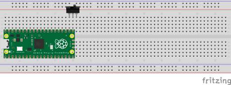

1.2.2. Switch and Button LED Control#
Build circuits that use a push button and a slide switch to control LEDs with a Raspberry Pi Pico.
Introduction#
So far we have controlled LEDs entirely in code using a while loop. In this
lab we add physical input: a momentary push button that toggles an LED on and
off, and a slide switch that routes voltage to one of two LEDs depending on its
position.
Materials#
One breadboard
One Raspberry Pi Pico
One push button
One slide switch
Two LEDs (any color)
Two resistors (same value calculated in the external LED lab)
Five wires
Instructions#
Button – hardware
Step 1: Attach the Pico to the breadboard#
Connect the Raspberry Pi Pico to the breadboard so that no header pin touches either power rail. Place the Pico near the center of the board with the USB port facing away from you. Refer to the Pico pinout diagram throughout this lab.
Step 3: Add wires and resistor#
Connect one leg of the button to GP2 on the Pico. Connect the opposite leg to a GND pin. Place a resistor and LED in series from GP13 to a GND pin, with the LED anode (long leg) toward GP13.
Button – code
Step 1: Connect the Pico to your computer#
Plug the USB cable into your Pico and into your computer. Open VS Code and connect to the Pico using the MicroPico extension.
Step 2: Import modules#
Create a new main.py file and add the following imports:
from machine import Pin
import utime
Step 3: Initialize pins#
Use named constants for every pin number so the purpose of each pin is clear:
BUTTON_PIN = 2 # GP2 -- push button input
LED_PIN = 13 # GP13 -- LED output
button = Pin(BUTTON_PIN, Pin.IN, Pin.PULL_UP)
led = Pin(LED_PIN, Pin.OUT)
Pin.PULL_UP enables the Pico’s internal pull-up resistor, which keeps the
button pin reading 1 (high) when the button is open and 0 (low) when the
button is pressed and pulls the pin to ground.
The Pin class supports several methods; the one we use here is value(),
which gets or sets the voltage level on a pin. You can read the full reference
here.
Step 4: Write the main loop#
Track both the current and previous button state. When the button transitions
from not-pressed (1) to pressed (0) – the falling edge – call
led.toggle() to flip the LED:
led.value(0) # ensure the LED is off at startup
button_state = button.value()
while True:
prev_button_state = button_state
button_state = button.value()
if prev_button_state == 1 and button_state == 0: # button just pressed
led.toggle()
utime.sleep_ms(100) # short delay prevents reading noise on the button pin
Switch – hardware
Step 1: Clear the breadboard#
Remove all wires and components except the Pico itself.
Step 2: Connect the slide switch#
A slide switch has three legs: the middle leg is the common terminal and the two outer legs are the outputs. When the switch is pushed left the middle and left legs are connected; when pushed right the middle and right legs are connected.
Place the switch so each leg occupies its own row. Connect the middle leg to GP16 on the Pico.

Step 3: Connect the first LED#
Connect a resistor from the left outer leg of the switch to an empty row. Place the anode (long leg) of LED 1 in that row and the cathode (short leg) in a row connected to a GND pin.
Step 4: Test the first LED#
Before adding the second LED, verify the circuit so far. Run the code below, then move the switch toward the first LED’s side: LED 1 should illuminate.
from machine import Pin
LED_PIN = 16 # GP16 -- slide switch common terminal
led = Pin(LED_PIN, Pin.OUT)
while True:
led.value(1)
Step 5: Connect the second LED#
Repeat the same resistor-and-LED wiring on the right outer leg of the switch, connecting the cathode of LED 2 to GND.
Step 6: Test the complete circuit#
Run the same code from Step 4 and move the switch in both directions. Moving the switch to the left should illuminate LED 1; moving it to the right should illuminate LED 2.
Validation#
Pressing the push button once turns the LED on; pressing it again turns it off.
The LED state is retained between button presses (toggling, not momentary).
Moving the slide switch illuminates one LED and turns the other off.
Neither LED flickers when the switch is in the opposite position.